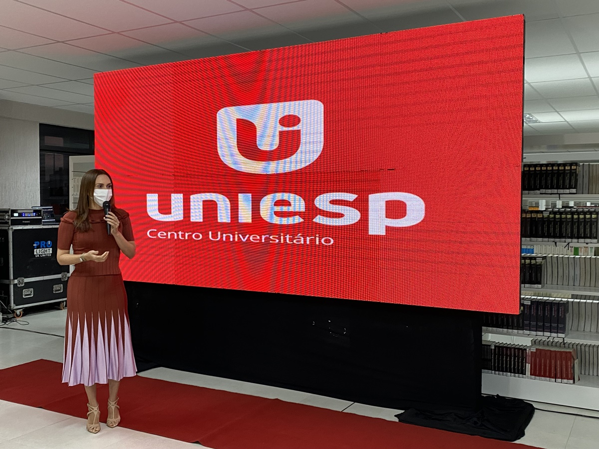

EVENTO HACKATHON 2022

O vídeo fornece uma maneira poderosa de ajudá-lo a provar seu argumento. Ao clicar em Vídeo Online, você pode colar o código de inserção do vídeo que deseja adicionar. Você também pode digitar uma palavra-chave para pesquisar online o vídeo mais adequado ao seu documento. Para dar ao documento uma aparência profissional, o Word fornece designs de cabeçalho, rodapé, folha de rosto e caixa de texto que se complementam entre si. Por exemplo, você pode adicionar uma folha de rosto, um cabeçalho e uma barra lateral correspondentes. Clique em Inserir e escolha os elementos desejados nas diferentes galerias.
MULHER TECH SIM SENHOR!
O vídeo fornece uma maneira poderosa de ajudá-lo a provar seu argumento. Ao clicar em Vídeo Online, você pode colar o código de inserção do vídeo que deseja adicionar. Você também pode digitar uma palavra-chave para pesquisar online o vídeo mais adequado ao seu documento. Para dar ao documento uma aparência profissional, o Word fornece designs de cabeçalho, rodapé, folha de rosto e caixa de texto que se complementam entre si. Por exemplo, você pode adicionar uma folha de rosto, um cabeçalho e uma barra lateral correspondentes. Clique em Inserir e escolha os elementos desejados nas diferentes galerias.
PALESTRA DO DIA: METAVERSO, SUAS VANTAGENS E SEUS RISCOS!
O vídeo fornece uma maneira poderosa de ajudá-lo a provar seu argumento. Ao clicar em Vídeo Online, você pode colar o código de inserção do vídeo que deseja adicionar. Você também pode digitar uma palavra-chave para pesquisar online o vídeo mais adequado ao seu documento. Para dar ao documento uma aparência profissional, o Word fornece designs de cabeçalho, rodapé, folha de rosto e caixa de texto que se complementam entre si. Por exemplo, você pode adicionar uma folha de rosto, um cabeçalho e uma barra lateral correspondentes. Clique em Inserir e escolha os elementos desejados nas diferentes galerias.